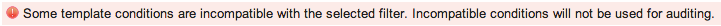

Certification Templates
Contents
1 Overview
Certification templates can define attributes, relationships, and reference field values that indicate what a record is expected to contain. These values are used to perform audits on ServiceNow records. The certification filter selected in the template identifies the table and records to audit, and the template conditions set the expected state for those records. The type of audit you create determines which tables and template conditions are available.
Users with the certification_admin role can create, update, and delete templates. Users with the certification role can view template versions.
2 Audit Types
When you create a template, ServiceNow assigns an Audit type that determines which tables and conditions are available in the template. This value is based on the application from which the template is created. Each application lists only the templates with the associated type. These are the available condition builders for each audit type:
- Compliance: Runs audits on any set of ServiceNow records, not only configuration items (CI). This audit type provides the following types of conditions for any ServiceNow table:
- Attribute: Sets conditions for the attributes of the records.
- Related List: Runs audits on records in tables that reference the table defined in the template.
- Architecture Compliance: Defines the following types of conditions for tables that extend the Configuration Item [cmdb_ci] table.
- Attribute: Sets conditions for physical attributes of CIs, such as memory or disk size.
- Related List: Runs audits on records in tables that reference the table defined in the template.
- Desired State: Defines the following types of conditions for tables that extend the Configuration Item [cmdb_ci] table.
- Attribute: Sets conditions for physical attributes of CIs, such as memory or disk size.
- CI relationship: Defines the relationships these CIs have with other CIs. An example of a relationship is a business service, such as Outlook Web Access, that depends on a server.
- User relationship: Defines the user who reviewed the log records. This is the only operator available with this condition builder.
- Group relationship: Defines user groups who backed up this CI. This is the only operator available with this condition builder.
- Related List: Runs audits on records in tables that point toward the table defined in the template.
3 Creating Templates
- Ensure that you have an appropriate filter that defines the records the template should evaluate.
- The template applies its conditions to these records.
- Navigate to the Certification Template form using one of these paths:
- Compliance > Architecture Compliance > Templates
- Compliance > Desired State > Templates
- Compliance > Templates
- GRC > Audit Definitions > Templates
- Click New.
- The following fields are completed automatically:
- Number: Each new template has a unique number. All versions of the same template use the same number.
- Active: All new templates are set to Active.
- Version: The version of a new template is set to 1.
- Audit type: The system sets the default type to Architecture Compliance, Desired State, or Compliance, depending on the application in which the template was created. You can select a different type when you create the template, but the field becomes read-only when you submit the record. The system uses audit types to filter record lists for appropriate data and determine which conditions are visible on the template form.
- Complete the following mandatory fields:
- Name: Enter a descriptive name for this template. The name should help identify the template's purpose.
- Filter: Select the filter that identifies the records to be certified. You can select either active or inactive filter versions. By default, the system presents only active versions for selection. If you start typing the name of a filter, the auto-complete feature displays all versions for selection. For architecture compliance and desired state templates, only filters that use a table extended from Configuration Item [cmdb_ci] appear on the choice list. All filters appear on the choice list for a compliance template. After you select a filter, the template condition builders appears. The template operates on the table specified in the filter.
- Enter a Description for this template.
- Define certification conditions using the condition builders. All conditions are AND conditions.
- The audit type of the template determines which conditions are available.
- Certification Attribute Conditions: [All audit types] Select configuration item attributes or specifications to certify, such as CPU count, memory, or disk space. Available fields in the attribute condition builder depend on the table from the filter. Typical ServiceNow conditions for attributes are available, including the between operator for setting numerical conditions with high and low boundary values. This operator was added specifically for desired state conditions.
- Certification CI Relationship Conditions: [Desired State audit types] Define the CI relationships to certify, such as Runs on or Depends on.
- Certification User Relationship Conditions: [Desired State audit types] Select the desired user relationship for this configuration item. The relationship provided in the base system is Log reviewed by.
- Certification Group Relationship Conditions: [Desired State audit types] Select the desired group relationship for this configuration item. The relationship provided in the base system is Backed up by.
- Certification Related List Conditions: [All audit types] Select field values from tables that reference the template table. For example, you might want to create a condition that evaluates all servers in the Server [cmdb_ci_server] table for the presence of Microsoft Word 2007, as referenced in the Software Installation [cmdb_sam_sw_install] table. The resulting condition is [Software Installation->Installed on] [Display name] [is] [Microsoft Word 2007].
- Note: By default, the condition builders for relationships display only suggested relationships. To see all possible relationships, select the Show all relationships check box on the right side of the form.
- a. Click Insert a new row to insert a condition.
- You cannot insert an empty condition.
- b. Click the green check mark icon to save a condition.
- Make sure to save the condition before performing any other operation. Updating the form does not save the condition.
- c. To delete a condition, click the red X beside the condition.
- The system marks the condition as inactive.
- d. To reactivate a condition, click the gray X.
- If another condition for the same field exists, the system prevents reactivation and warns you of the conflict.

- Click Submit.
- To create another version of this template, change the name, edit the conditions, or select a different filter.
- Updating the template Description does not create a new version.
- Note: If you select a filter whose table is incompatible with the existing template conditions, the system displays a warning that the conditions cannot be applied. 
- Click Update.
- The system saves a new version of the current template and makes it the Active version. The previous version is marked inactive.

{kind=link}
{kind=link}
{kind=link}
{kind=link}
{kind=link}
4 Template Record List
The default Templates list displays only the active version of each template, filtered by Audit type.
{kind=link}
To view all template versions for an audit type, click the arrow before Active=true to remove that condition from the breadcrumbs.
{kind=link}
{kind=link}
5 Managing Templates
You can view and manage all versions of a template from the Template form.
- Open any version of a template.
- The Other Versions related list displays all other versions of this template, both active and inactive.
- Click any version in the related list to display the record for that version.
- Update the template to create a new version.
- To make an inactive template the current version, open that version, edit it if desired, and then click Revert.
- Select the Audits related list to view all audits configured to use this template.
- Click New to create a new audit record with the template selection and table pre-populated.
{kind=link}
{kind=link}
{kind=link}
5.1 Cloning Templates
To clone a new template from an existing one:
- Open the template record to be copied.
- Make any necessary changes.
- A good practice is to change the template name or description to distinguish it from the original.
- Click Clone.
- ServiceNow increments the record number above the highest template number and sets the version of the new record to 1. A message appears under the header bar naming the source record for the clone.
- Both templates are Active and appear in the record list. This allows you to see the entire history of the template.
{kind=link}
{kind=link}
5.2 Deleting Templates
Only users with the certification_admin or admin role can delete template versions. You cannot delete a template version that is being used for an audit.
- To delete a single template version, open that version record and click Delete.
- The system hides the Delete button for templates that are in use. If you delete the latest, active version of a template, the previous version of that template is reset to Active.
- To delete all unused and inactive versions of a template, open any version of that template and click Delete inactive versions under Related Links.
- When prompted, click OK to proceed.
{kind=link}
{kind=link}